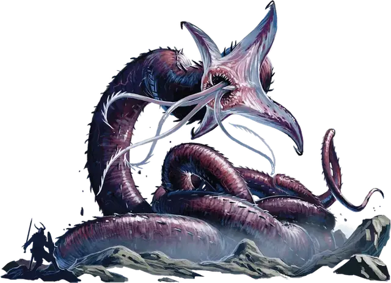

Неотелид
Neothelid
Громадная Аберрация, хаотично-злая

Класс Доспеха 16 (природный доспех)
Хиты 325 (21к20 + 105)
Скорость 30 футов
| мод | спас | ||
|---|---|---|---|
| СИЛ | 27 | +8 | +8 |
| ЛОВ | 7 | −2 | −2 |
| ТЕЛ | 21 | +5 | +5 |
| мод | спас | ||
|---|---|---|---|
| ИНТ | 3 | −4 | +1 |
| МДР | 16 | +3 | +8 |
| ХАР | 12 | +1 | +6 |
Чувства слепое зрение 120 футов, пассивное Восприятие 13
Опасность 13 (10000 опыта)
Бонус мастерства +5
Среда обитания Подземье
Особенности
Чутье существ. Неотелид знает о присутствии существ в радиусе 1 миль от себя, чей Интеллект 4 или выше. Он знает расстояние и направление до каждого существа, а так же значение параметра Интеллект, но больше ничего не может почувствовать. Существо, защищенное заклинанием сокрытие разума [mind blank], необнаружимость [nondetection] или похожей магией, он почувствовать не может.
Врождённое колдовство (Псионика). Базовой характеристикой Неотелида является Мудрость (Сл спасброска от заклинаний 16). Он может накладывать следующие заклинания без использования материальных компонентов:
• Неограниченно: левитация [levitate].
• 1/день каждое: смятение [confusion], слабоумие [feeblemind], телекинез [telekinesis].
Сопротивление магии. Неотелид имеет преимущество на спасброски против заклинаний и других магических эффектов.
Действия
Щупальца. . Рукопашная атака оружием: +13 к попаданию, досягаемость 15 футов, одна цель. Попадание: 21 (3к8 + 8) дробящего урона плюс 13 (3к8) урона психической энергией. Если цель является Большим существом или меньше, то она должна успешно пройти спасбросок Силы Сл 18 или неотелид её проглотит. Проглоченное существо ослеплено и опутано, имеет полное укрытие от всех атак и других эффектов снаружи неотелида, и получает 35 (10к6) урона кислотой в начале каждого хода неотелида.
Если неотелид получает 30 урона или больше в один ход от существа внутри него, то он должен успешно пройти спасбросок Телосложения Сл 18 в конце этого хода или отрыгнуть всех проглоченных существ, которые падают ничком в месте не далее 10 футов от неотелида. Если неотелид умирает, то проглоченные существа больше им не опутаны и могут выбраться из тела, потратив 20 футов движения, и выйти сбитыми с ног.
Кислотное дыхание (Перезарядка 5–6). Неотелид выдыхает кислоту в конусе 60 футов. Каждое существо в этой области должно пройти спасбросок Ловкости Сл 18 и получить 35 (10к6) урона кислотой при провале или половину при успехе.
Описание
Неотелид – это покрытый слизью червь невероятных размеров, который является результатом того, что цикл воспроизведения свежевателей разума пошел совсем не так. В редких случаях колония иллитидов рушится, обычно из–за внешнего нападения, а старший мозг умирает. Когда это происходит головастики колонии внезапно освобождаются от своей судьбы. Они больше не служат едой и их больше не кормят смотрители. Ведомые голодом, они начинают пожирать друг друга. Только один головастик из тысяч выживает в бассейне колонии и он становится неотелидом.
Ненавистный Иллитидам. Одно из самых строгих табу в сообществе иллитидов – это идея позволить зрелому головастику выжить, не вживив его в мозг донора. При нормальных обстоятельствах любой головастик, который вырастает больше нескольких дюймов, убивается и поедается старшим мозгом или менее зрелыми головастиками. Любой головастик, который пережил это состояние считает угрозой колонии и свежеватели разума создают группы охотников для уничтожения мерзости. У него не достает интеллекта для того, чтобы его заметил старший мозг со способностью чувствовать мысли, так что неотелиды оправдывают такие предосторожности.
Дикое Чудище. Будучи одичавшим, неотелид не знает ничего кроме хищнического существования, которым жил до этого и пытается осознать свои новые псионические способности. Неотелиды рыскают по подземным проходам в поиске мозгов, чтобы утолить свой постоянный голод, и становятся все более злобными. Эти существа могут выделять растворяющие ткани энзимы из каналов своих щупалец, превращая жертв в лужу слизи и оставляя в живых лишь пульсирующий мозг. Они не знают о своей связи с иллитидами, так что охотятся на них так же, как и на всех остальных.